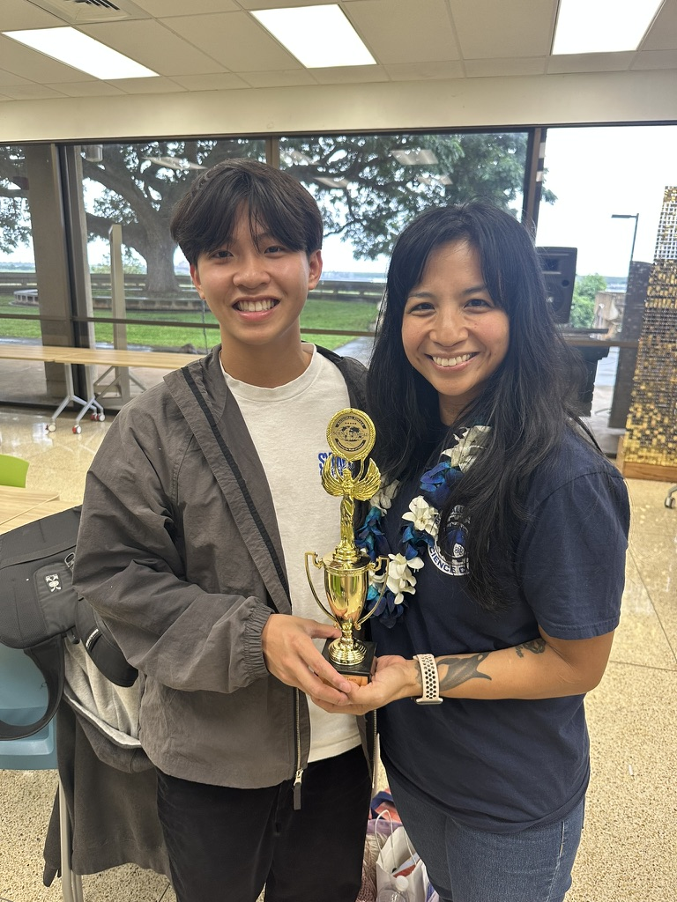
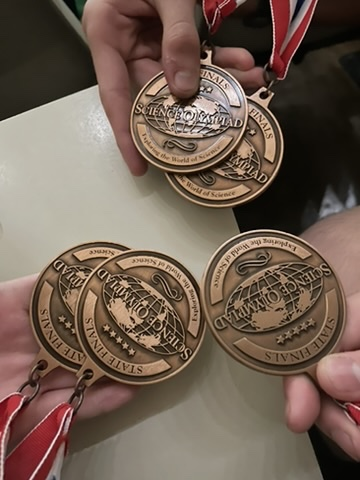
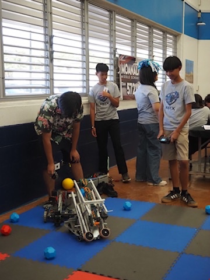
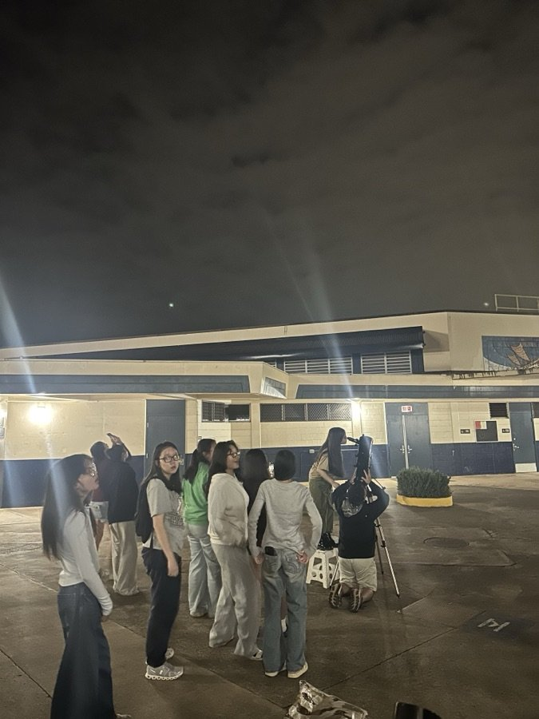
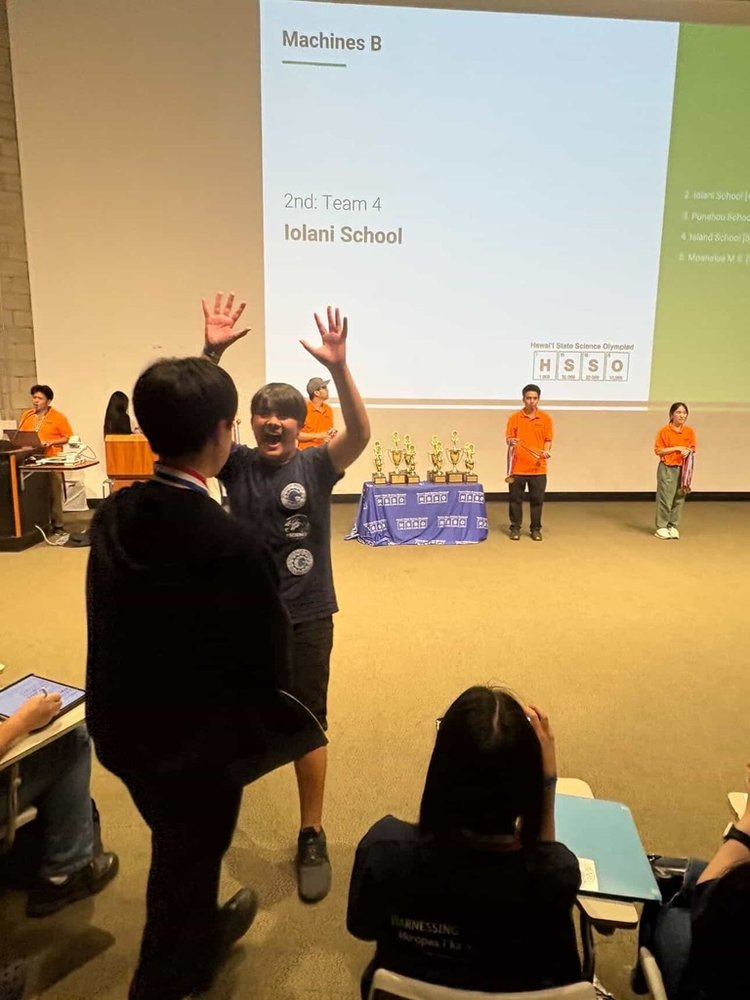
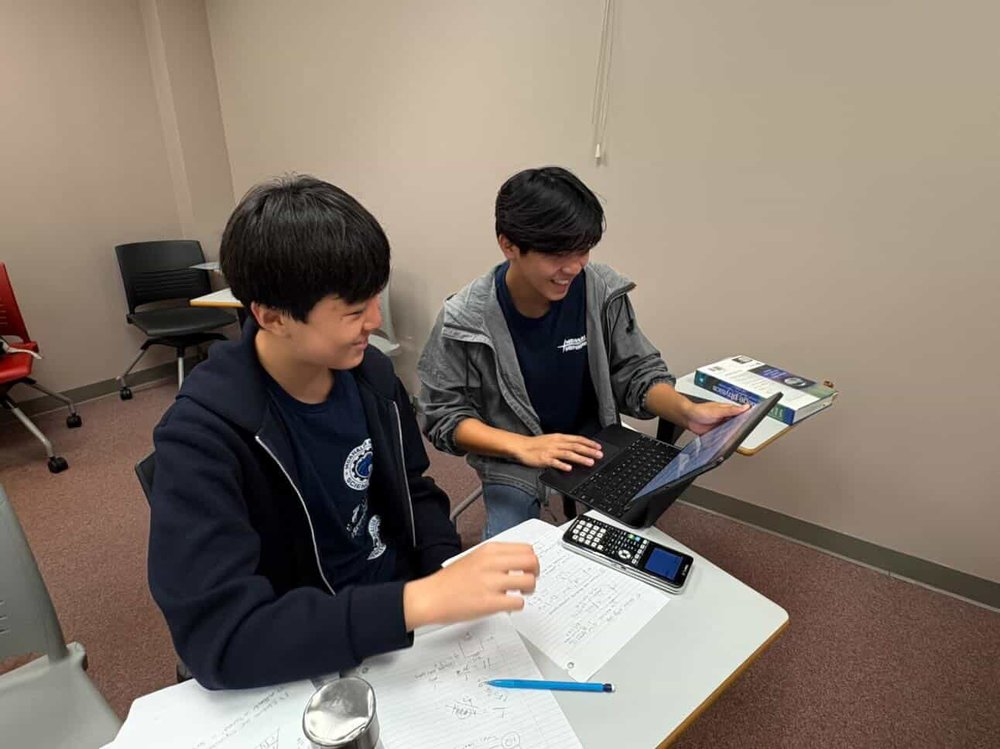

Every big idea starts as a small seed. Here’s how Kūkulu ʻIke began, and what we’re working toward.

Kūkulu ʻIke is a student-focused STEM initiative designed to connect students with hands-on experiences, inspiring mentors, STEM professionals, and opportunities to explore fields they may have never encountered before. Through activities, guest speakers, demonstrations, and community connections, we hope to help students move from simply learning about STEM to experiencing it for themselves.
Our mission is not to tell students what they should become. Instead, we want to give them the opportunity to discover what they enjoy, what they are capable of, and where their curiosity can take them.
We believe that a single experience (a conversation with an engineer, a hands-on experiment, building something for the first time, or simply being introduced to a field you never knew existed) can spark an interest that lasts a lifetime.
Kūkulu ʻIke was created to help make those moments happen.
Kūkulu ʻIke empowers Hawaiʻi students by connecting them with STEM opportunities, mentors, and personalized pathways, making it easier for every student to discover their passions and build a future in science, technology, engineering, and mathematics. From curiosity to career, Kūkulu ʻIke plants the seeds of discovery, cultivates innovation, and provides every student with a clear pathway to STEM opportunities.

Every student deserves hands-on exposure to STEM, regardless of their school or background.

We grow by connecting students, schools, and Oʻahu’s STEM professionals together.

We meet students’ questions with real experiments, real mentors, and real answers.
Kūkulu ʻIke works to make STEM opportunities more visible, accessible, and connected for younger students. Through our work at Moanalua Middle School, we have helped students discover new ways to get involved while strengthening the connection between middle and high school STEM communities.

We helped increase access to opportunities such as Science Olympiad, Science Fair, and Science Bowl, giving more students the chance to explore STEM beyond the classroom.

By connecting middle school students with high school students already involved in STEM, we have created opportunities for mentorship, collaboration, and a stronger sense of community between both schools.
When I started science club at Moanalua Middle, I only knew about science fair and I never heard of competitions like Science Olympiad. I’m grateful that students from Moanalua High School came down to promote it because with their help and Mrs. Galutira’s support we made it to states and earned a few medals. Through Science Olympiad I have grown in knowledge and gained a better grasp of what I want to do later in my life.
Our goal is not only to introduce students to STEM activities, but to help them see where those opportunities can lead and give them a community that supports them along the way.
Kūkulu ʻIke is proud to partner with schools across Oʻahu to build a strong, connected STEM pipeline from the earliest grades through high school. Our current partners include Moanalua, Red Hill, Shafter, Salt Lake, and Aliamanu Elementary Schools, Moanalua Middle School, and Moanalua High School, spanning the full journey from elementary curiosity to college- and career-ready skills.
Kūkulu ʻIke works alongside student clubs across our partner schools to bring STEM learning to life through hands-on activities, demonstrations, and mentorship. By connecting students with robotics, science, math, and service organizations, we create opportunities for students of all ages to learn from one another and explore STEM together.